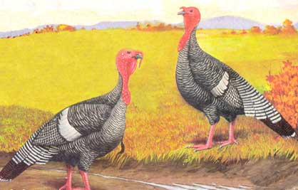
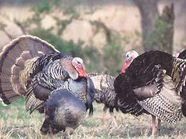
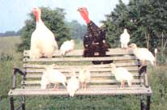
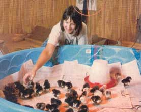
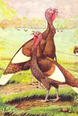
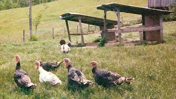

Turkeys first came here to Locust Grove Farm in southern Ohio in 1991. After a year of living without animals I announced, "Fences or not, I am going to get some livestock." My wife, Linda, said I could if I wanted, but she was much too busy to participate. About a month later my livestock - baby chickens - was delivered. But she took one look at those tiny baby birds, and I could tell from the expression on her face I was out of the chicken picture. So I ordered some day-old turkey poults and decided to try raising turkeys at home. That's how my love affair with these beautiful, friendly birds of many colors began. After my first taste of flavorful, farm-fresh, roasted turkey, I knew I would never go back to bland commercial birds again.
Raising a few friendly, handsome turkeys for your family's use is both fun and worthwhile. If you raise them to eat, you'll have a much more wholesome and flavorful turkey than anything you could buy at the supermarket. Several of the old "heritage" breeds are still available, as well as the "modern" Broad-breasted Whites.
Heritage poultry specialist Glenn Drowns of Sand Hill Preservation Center in Calamus, Iowa, says the Traditional Bronze and White Holland varieties are well suited for small flocks of under 20, particularly for consumption, and that Narragansetts and Bourbon Reds are beautiful medium-size birds better suited to foraging and pest control. I also recommend the striking white-and-black Royal Palm for those desiring a smaller (10- to 16-pound) turkey.
Frank Reese, a long-time turkey aficionado and breeder from Good Shepherd Ranch in Lindsborg, Kan., also suggests the Standard Bronze and White Holland varieties for meat production. He adds that his Sadie Lloyd strain of Bourbon Reds is an excellent all-around choice and mothers very well - no need to worry that chicks won't be looked after. Other good "setters," according to Reese, are the Black Spanish and small strains of the Narragansett.
If you want to raise turkeys to sell, my personal favorite is a medium-size strain of the Broad-breasted Bronze. However, this bird has only been available recently from private breeders because of a temporary outbreak of a slow-spreading, chronic respiratory disease in commercial breeder flocks. This fast-growing modern bird has the abundance of breast meat that U.S. consumers have come to expect. A Broad-breasted Bronze usually has two to four times the amount of breast meat as a wild turkey. A Bronze generally will reach a dressed weight of 16 to 25 pounds in about 24 weeks, the standard time required to raise a high quality turkey. It could take a heritage bird up to two years to reach this weight, and some never will. This time period is important because turkeys don't add fat until 22 weeks. Fat is where much of the flavor is, so you want a good layer under the skin to self-baste the bird as it cooks.
The easiest and least expensive way to get started with turkeys is to buy day-old turkeys in the spring. (Baby turkeys are called poults.) Before your birds arrive, you will want to set up a brooder area. At Locust Grove Farm we brood our poults in a children's wading pool - yep, that's right. We line it with about 1 inch of wood shavings and hang one or two infrared heat lamps to keep the birds warm. It is very important to keep your birds warm and dry, and the round design of the pool will keep the birds from piling in a corner and smothering each other. The temperature at floor level for the first week should be between 90 and 100 degrees Fahrenheit; after the first week raise the lamps to reduce the floor temperature by 5 degrees each week.
You will also need one feeder and waterer for every 25 birds. We start our turkeys on Purina Game Bird Starter, which contains 30 percent protein (Startena). After a week or so, remove the wading pool and give the birds a larger area to roam; an 8-by 8 space will work well for the next three weeks or so. Soon your birds will start perching on the top of the waterer or on the window sills: They're telling you that they're ready to roost. You'll need to mount a small (l- or 2-inch round) branch 1 foot off the floor.
If temperatures are above 75 degrees, birds 6 weeks and older can start to go outside for a while each day. If it is rainy and cold, keep them confined. By eight weeks, your birds will be ready to go on pasture. If you allow your birds free access to the outdoors, you may find they don't want to go back in at night unless you make them.
A better plan is to build a moveable roost assembly, such as the one described below ("Raising the Roost"), and let your turkeys live outside on range, in a large fenced pen. Range is a short-grass pasture (4- to 6-inches long), and turkeys will do well on most any range, but I prefer a mixture of Kentucky bluegrass and medium red clover. If possible, choose a site without trees. Turkeys love to fly up into trees, and if the trees are inside the pen, manure will build up to unacceptable levels under them.
We need to treat these large, intelligent birds as humanely as possible, giving them enough secure space, places to dust bathe and roosts to fly up to at night. A yard or fenced pen of one-eighth acre (75 feet by 75 feet) can support up to a dozen turkeys. You will need some woven-wire field fence, such as 1047-12-11 (available from farm or hardware stores), to keep predators, such as dogs, foxes and raccoons, away from your birds. If you don't want to make this a permanent fence, partially drive in some metal T-posts so they can be removed later, or use an electric poultry netting.
Keep your birds on fresh range at all times by moving the portable roost to clean ground on a weekly basis. During the week you can move the feeder and waterer daily to keep the surrounding area from getting trampled or too heavily manured. Mow the pen to keep the grass 4- to 6-inches long.
A 4-foot-long automatic waterer connected to your homestead water supply will cut the time needed to perform chores. You can use a 5- to 8-gallon poultry fountain instead, but you'll have to carry at least 2 gallons of water each day for every dozen mature turkeys. Build or buy a range feeder that will hold about 100 pounds of feed. It takes about 3¼ pounds of feed to produce 1 pound of live turkey weight. Your feed consumption will rise from as little as a half-pound per bird, per week at two weeks old to nearly a pound per day near maturity.
Turkeys love to be around people. You should visit your birds at least twice a day, whether or not they need feed or water. An old farm book I have states that turkeys can die from loneliness. If you aren't careful, they might follow you back to the house just for company.
As fall approaches you will need to decide if your turkeys are pets or dinner. Luckily, by raising heritage breeds, you can have your turkey and eat it, too. Excellent instructions for slaughtering can be found in Storey's Guide to Raising Turkeys. If you want a perpetual breeding flock of heritage birds, you should harvest some of the toms to maintain a ratio of one tom per 10 hens. You can either offer your extras for sale (many folks like to keep a strutting tom or two, similar to the way some folks keep peacocks) or slaughter the extras.
In the spring you can let your birds mate to expand your flock and sell turkey poults or trios (a tom and two hens) and invite others to join the growing network of turkey lovers who are preserving the biological diversity of this wonderful, useful bird - and the flavor and purity of their holiday dinners.
You can build a moveable turkey roost, like the one in the Image Gallery, which can be towed to fresh range as needed by a garden tractor or all-terrain vehicle. Using moveable roosts will keep manure from building up inside the pen. To build a 5-foot-by-8-foot roost, you will need 22 2-by-4s for the roof supports, side frame and roosts. Space the roosting boards 18 inches apart, and place them flat between the side supports. Reinforce each roost underneath with a 2-by-4 joist. Cut two 7-foot-long 2-by-4s for the front roof supports and two 5-footers for the rear supports. Make two 10-foot-long 2-by-6 skid runners, and cut a 45 degree angle on the front ends so the runners will slide without digging into the soil. Use three more 10-foot-long 2-by-6s for the roof rafters. You can use metal or fiberglass panels for the roof. The completed roost will shelter up to 20 turkeys.
The first organizations specialize in providing heritage turkey breeds:
Sand Hill Preservation Center
Good Shepherd Ranch
Renaissance Poultry and Exotic Fowl
Box 7, Site 6, RR 2
Ponoka, Alberta T4J 1R2
Canada
403-783-6632
The three following companies are larger scale mail-order hatcheries that offer both standard and heritage turkey breeds for sale:
Murray McMurray Hatchery
Stromberg's Chicks & Gamebirds Unlimited
Hoffman Hatchery
Turkeys are so large, fast and impressive that Benjamin Franklin suggested the turkey as our national bird. "I wish the bald eagle had not been chosen as the representative of our country," Franklin wrote. "He is a bird of bad moral character; like those among men who live by sharping and robbing, he is generally poor, and often very lousy. The turkey is a much more respectable bird, and withal a true original native of America."
Wild turkeys, widely distributed throughout the United States and Canada, are fascinating to watch and a challenge to hunt or photograph. The procedure is the same for either activity, only the tools are different. You'll need to become skilled at finding these wary birds. Look for what turkeys look for: sites with open woodlands or forests with scattered natural or artificial clearings.
Whether you are a hunter or watcher, a good pair of 10x50 binoculars are a necessity. Don't scrimp: Get a good pair. Poor binoculars are worse than no binoculars, especially when your best observation time is near dusk or dawn, as it is for turkey watching. The key to finding turkeys is locating their food source. During the spring and summer, grasses and insects are plentiful, and turkeys can generally be found at forest edges and in open pastures and meadows. As the season progresses toward fall, you will find turkeys in the woods gobbling wild grapes, nuts and even dogwood berries.
|
 WATT Publishing Narragansett turkeys are attractive, and some strains are particularly good at hatching eggs. |
 National Wild Turkey Federation To locate wild turkeys, try to find their food source. |
 Herman Beck-Chenoweth Turkeys love to be up high, so they will congregate anywhere they can find a nice high perch. It's cute, but manure accumulation can become a problem. |
|
 Herman Beck-Chenoweth A wading pool with a heat lamp makes the perfect first home for your poults. |
 WATT Publishing Heritage turkey breeds, such as these Bourbon Reds, are an excellent choice for the homestead. |
 Herman Beck-Chenoweth Movable roots will keep the pen sanitary and your turkeys safe and content. |